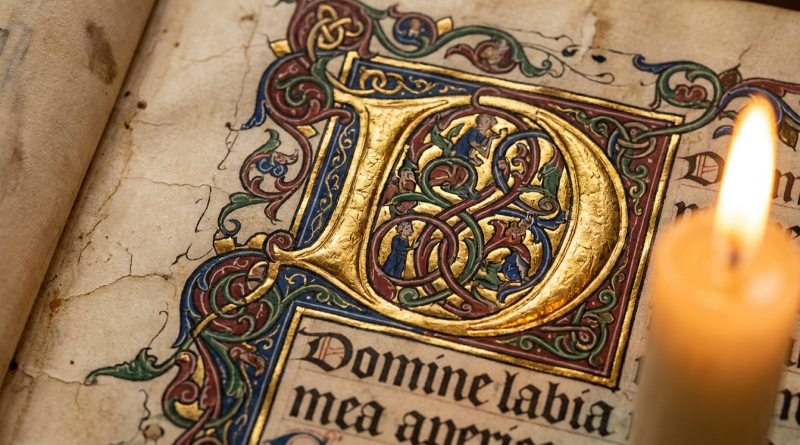

One generated leaf, framed by hand-drawn ornament, lit by a gold shimmer that never stops moving — because real gold leaf never really sits still under candlelight either.

Detail, illuminated page — generated reference, gold ornament hand-drawn in SVG
A scribe filling a drop cap never worked in a hurry. The gold was laid a sheet at a time, burnished with an agate until it threw back candlelight instead of absorbing it, and the vine work grew out from the letter like it had always been rooted there. This page borrows that logic: one generated study of a real illuminated capital, held inside hand-drawn corner ornament, with a gold-leaf sweep that behaves the way real gold leaf does under moving light — brightening, dimming, never quite finished catching the eye.
Nothing here is a texture trick pretending to be gold. It's a gradient, in motion, doing the one thing gold has always done for a page: telling your eye where to stop first.
The framed image is a single Higgsfield still of an illuminated manuscript detail — gold leaf, painted vine work, a candle for scale and warmth. It sets the palette for everything else on the page rather than sitting apart from it.
The corner flourishes around the frame are plain SVG paths, drawn to echo the vine work in the image without copying it. They share the same animated gold gradient as the headline, so frame and text read as one gilded system.
Both the headline and the ornament share one shine: a bright band sliding across a darker gold, on a loop long enough that it never feels mechanical. CSS text does it with background-clip; the SVG paths do the identical trick with an animated gradient transform.
The opening capital starts invisible and swells into place the moment the intro paragraph scrolls into view — a small nod to the idea that in a real manuscript, that letter was the one thing the scribe saved for last.